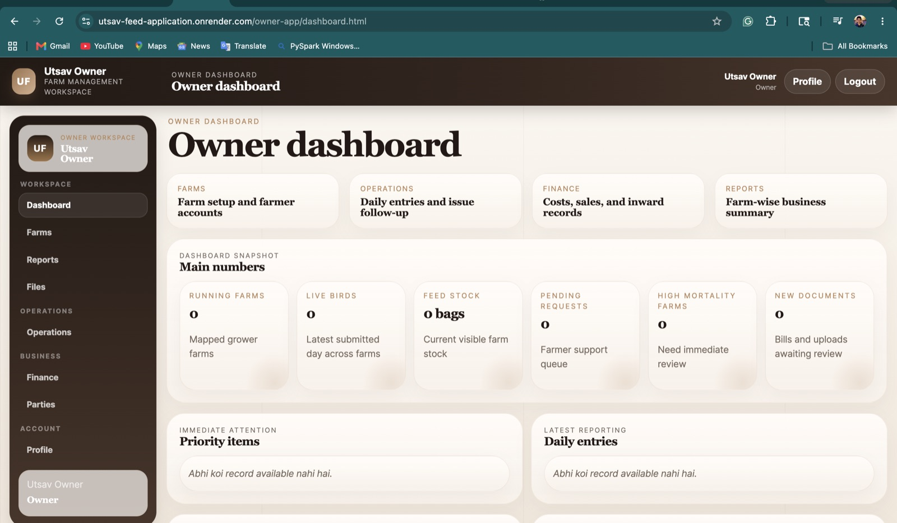

Five subscriptions, no complete picture
Each tool holds a piece of the operation and staff connect them by hand.
Business platforms, partner portals, and reporting built around your workflow. Delivered from Nagpur, India, with planned US overlap hours.

The owner workspace and farmer application connect reporting, feed updates, and operational records. Built for a client in India.
Read the case study →Each tool holds a piece of the operation and staff connect them by hand.
Requests, documents, status, and follow-ups need one shared place.
The team spends Friday assembling numbers leadership needs on Monday.
That is usually enough for a useful first conversation.